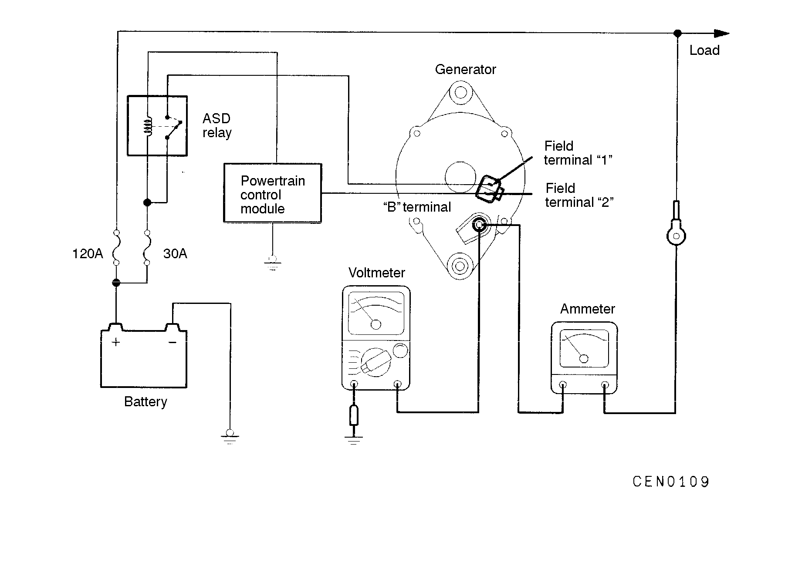

![[Previous]](https://mitsubishitechinfo.com/data/F24S/BUTTONS/fprevg.png)
![[Next]](https://mitsubishitechinfo.com/data/F24S/BUTTONS/fnextg.png)
OUTPUT CURRENT TEST

This test determines if the generator output current is normal.
(1)Before testing, be sure to check the following:
•Generator installation and wiring connections
•Battery (Refer to GROUP 54 - Battery.)
NOTE
The battery used should be slightly discharged. The load needed by a fully-charged battery is insufficient for an accurate test.
•Generator drive belt tension (Refer to GROUP 00 - Maintenance Service.)
•Fusible link
•Abnormal noise from the generator while the engine is running
(2)Turn the ignition switch to the OFF position.
(3)Disconnect the negative battery cable.
(4)Disconnect the generator output wire from the generator "B" terminal. Connect a DC test ammeter with a range of 0 - 100 A in series between the "B" terminal and the disconnected output wire. (Connect the (+) lead of the ammeter to the "B" terminal. Connect the (-) lead of the ammeter to the disconnected output wire.)
Caution
Never use clips but tighten bolts and nuts to connect the line. Otherwise loose connections (e.g. using clips) will lead to a serious accident because of high current.
NOTE
An inductive-type ammeter which enables measurements to be taken without disconnecting the generator output wire is recommended.
(5)Connect a voltmeter with a range of 0-20 V between the generator "B" terminal and the ground. (Connect the (+) lead of the voltmeter to the "B" terminal, and then connect the (-) lead of the voltmeter to the ground.)
(6)Connect the negative battery cable.
(7)Leave the hood open.
(8)Check that the reading on the voltmeter is equal to battery voltage.
NOTE
If the voltage is 0 V, the cause is probably an open circuit in the wire or fusible link between the generator "B" terminal and the battery (+) terminal.
(9)Start the engine, and turn the headlights on.
(10)Switch the headlights to high beam, turn the heater blower switch to High, increase the engine speed to approx. 2,500 r/min, and read the maximum current output displayed on the ammeter.
Limit: 70% of nominal output current
NOTE
•For the nominal current output, refer to the Generator Specifications.
•Because the current from the battery will soon drop after the engine is started, Steps (9) and (10) should be carried out as quickly as possible in order to obtain the maximum current output value.
•The current output value will depend on the electrical load and the temperature of the generator body.
•If insufficient electrical load is used while testing, the specified level of current may not be output even though the generator is normal. In such cases, increase the electrical load by leaving the headlights on with the engine off to discharge the battery before testing.
•The specified level of current also may not be output if the temperature of the generator body and/or ambient temperature is too high. In such cases, allow the generator to cool before testing.
(11)The reading on the ammeter should be above the limit value. If the reading is below the limit value and the generator output wire is normal, replace the generator.
(12)Run the engine at idle speed after the test.
(13)Turn the ignition switch to the OFF position.
(14)Disconnect the negative battery cable.
(15)Disconnect the ammeter and voltmeter.
(16)Connect the generator output wire to the generator "B" terminal.
(17)Connect the negative battery cable.